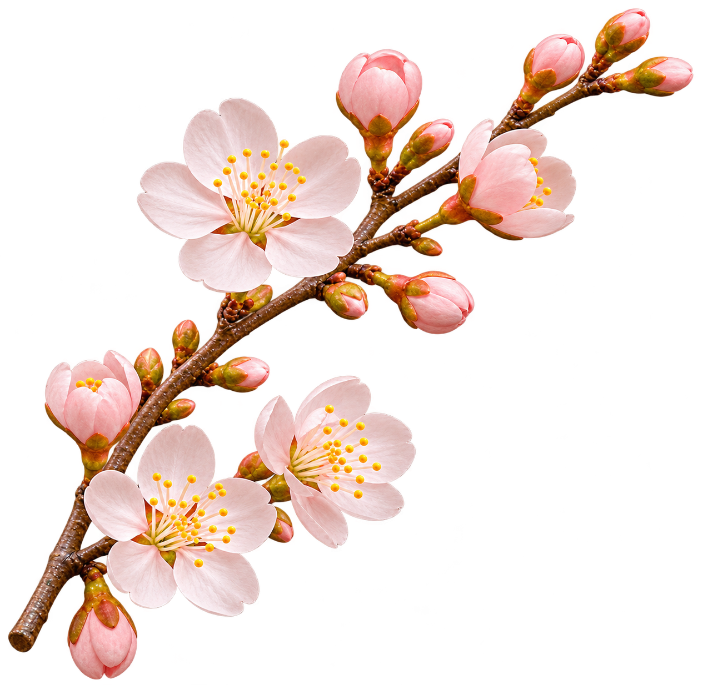
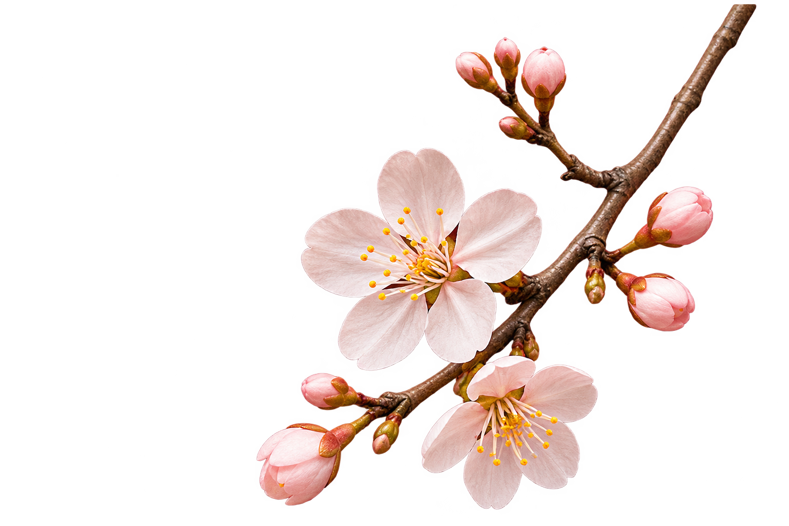
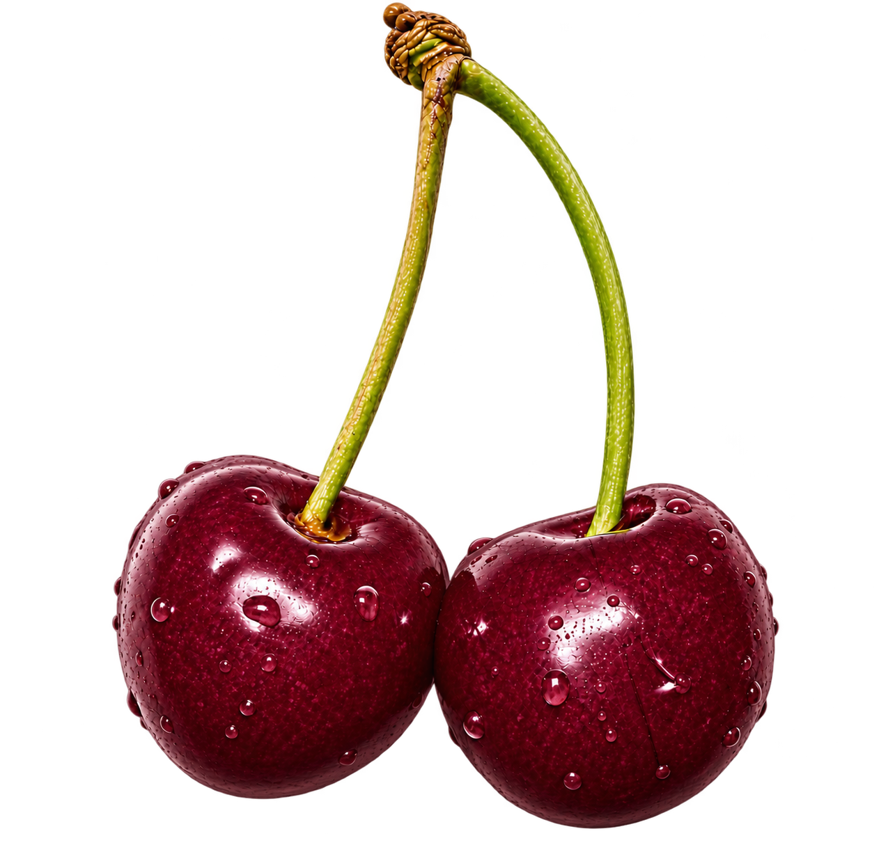

Die
Kirsche

Eine kleine Welt, rund um die Kirsche.
Wissen. Inspiration und kreative Ideen.
Willkommen in der Welt der Kirsche!
Klein, rund und voller Überraschungen!
Die Kirsche ist viel mehr als nur eine süsse Sommerfrucht. Hinter ihrer glänzend roten Schale verbergen sich spannende Geschichten, interessante Fakten und jede Menge kreative Möglichkeiten.
Auf dieser Webseite dreht sich alles um die kleine rote Frucht. Entdecke, woher die Kirsche stammt, wie sie wächst und was sie so besonders macht. Lass dich von spannenden Informationen, überraschendem Wissen und kreativen DIY-Ideen inspirieren.
Ob du etwas Neues lernen, selbst kreativ werden oder einfach in die Welt der Kirschen eintauchen möchtest – hier bist du genau richtig!